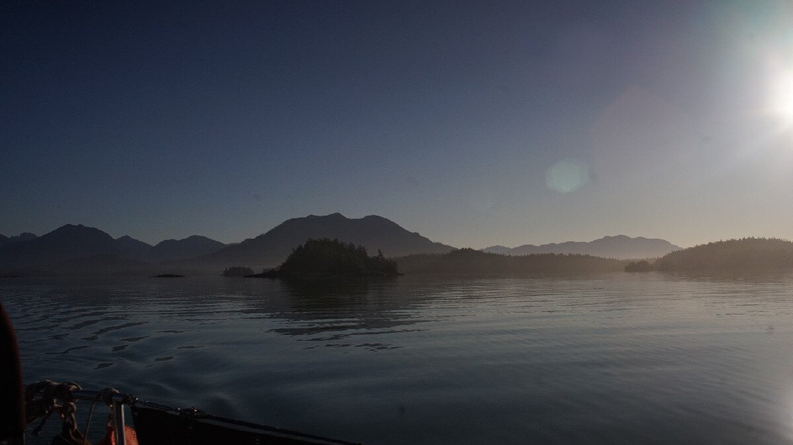
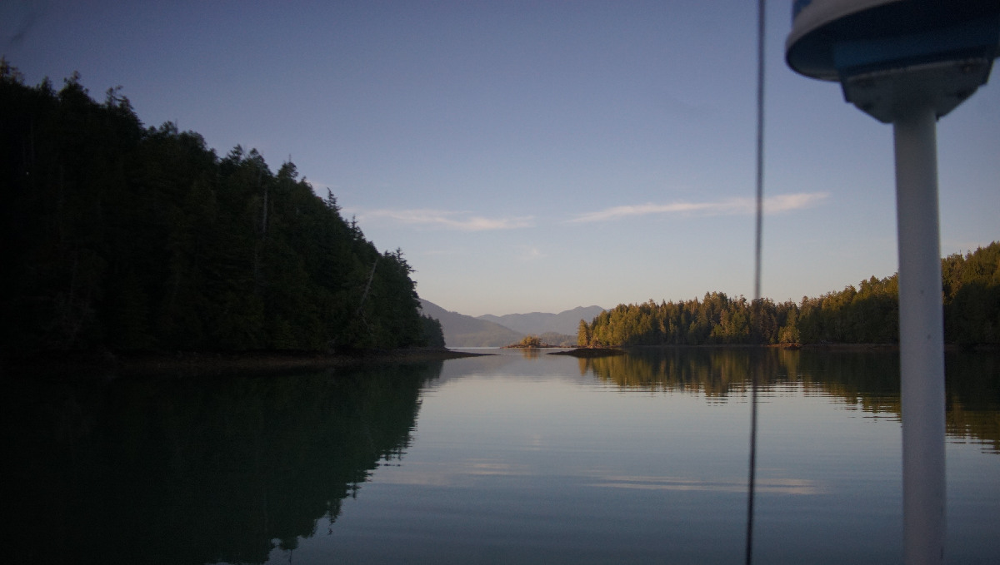
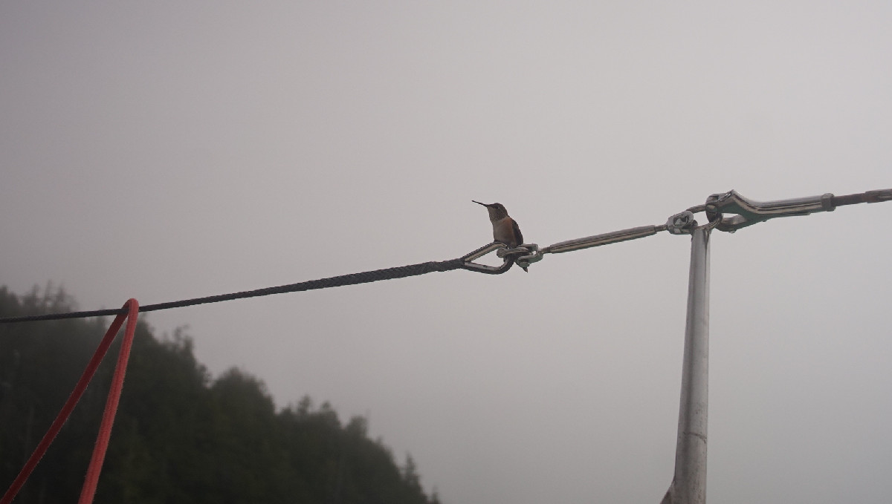

vancouver island west coast
In July 2025 we sailed to Ucluelet from the Juan de Fuca Strait, on the way back south we explored Barkley Sound. We gathered notes on several anchorages that we've stopped at on this page.
See also more detailed posts: Ucluelet.
Northwest winds seem to bend into Barkley Sound as a west or southwest wind, and often times when there is a strong northwest gale due to a stationary high pressure system the winds does not always reach the sound. Sometimes the wind south of Tofino near the coast would be outright calm, or would bend as a weak southeast wind.
Ocean waves meeting with an ebb out of the sound can generate some fair swells, and it is best to give Cape Beale sufficient offing because the water shoals there, also resulting in big waves.
There were a lot of algae floats in the waters in July, we had to keep a constant watch and to go around the bigger patches so as to not foul our propeller.

Bamfield. On July 7th we sailed westward out of Port San Juan and towards the Broken Islands. The wind was light that morning, and the fog was thick and stayed thick throughout most of the passage. The fog bank only parted when we arrived at Pachina Point, and the northwest wind rose then too, permitting for a bit of sailing. Even if the wind wasn't high, conditions were a bit rough around Cape Beale. The water near the cape is shallow and reef-strewn. Before getting near it we noted that the sea was a beautiful jade color, making it easier to make out loose bits of seaweed(there were large patches floating around that we had to avoid). Conditions settled as we passed the cape, with the wind at our stern quarter. We anchored at the south end of Bamfield, in the first basin. There were 3 big power boats anchored, we found a spot amongst them but room was a bit limited due to the presence of many shore-side docks, a mooring ball, and a few crab pots. We anchored in 46 ft (HW) Our spot was well shielded from weather, we spent a quiet night there. We did not go ashore that day, but it looked like a nice small town to walk through. Cell reception in here was excellent.
Turtle Island. On July 10th we left Ucluelet and headed towards the anchorage north of Turtle Island, tucked between many other bigger and smaller landmasses, 11 NM away. A weak southeast breeze brought plenty of cloud cover, but the sun showed itself after 1300. There was only 1 boat anchored in the anchorage. We anchored to the northwest of the bay, dropping the hook in 25 ft (med tide, would rise to 28 ft HW) on a mud bottom. Some hummingbirds were racing furiously around us as we motored into the calm bay, and stayed with us for a few hours aboard Pino afterwards. We would hear the buzzing of their wings as they raced by, momentarily hovering in the cockpit before setting off again. There were at least 5 traveling around our boat at the time. We had cell coverage in here, but the strength of the signal came and went throughout the day.
We stayed here for 4 days. We had 1 day of 30-35 knot winds, but the holding in the bay was very good, with ample room for a good scope. There was a lot of wind out in the Pacific, but the weather seemed to rarely touch Tofino and Barkley Sound (aside for that one day that was mentioned). In fact, much of that area near shore seemed calm more often than not(in July, anyway). Our stay there spilled into the weekend and the quiet waters were disturbed by 15 small motor boats, all of the same make, coming to anchor all at once. They left the next day, but while they were around the anchorage had stopped feeling remote. There was fog in the anchorage most mornings.